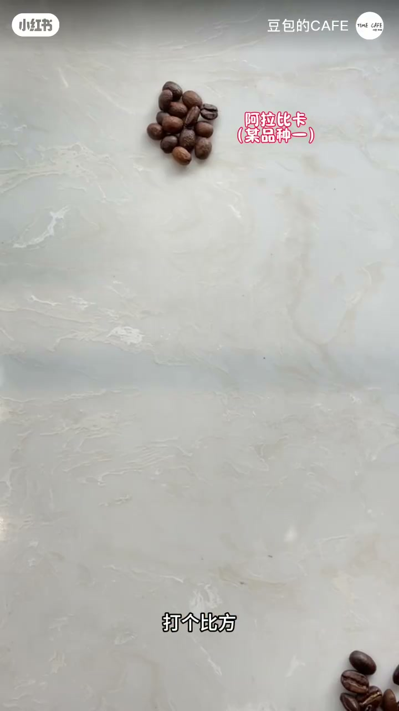
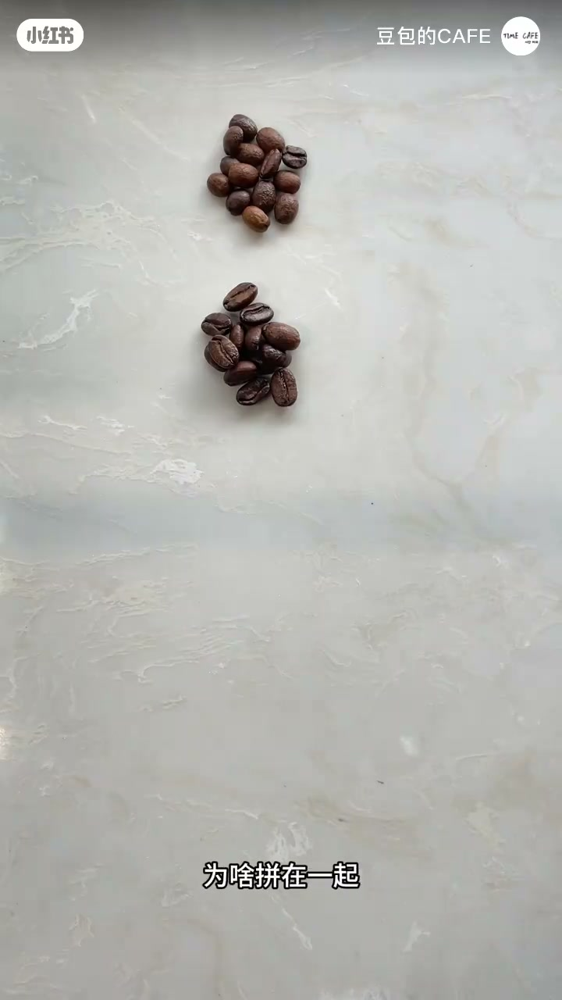
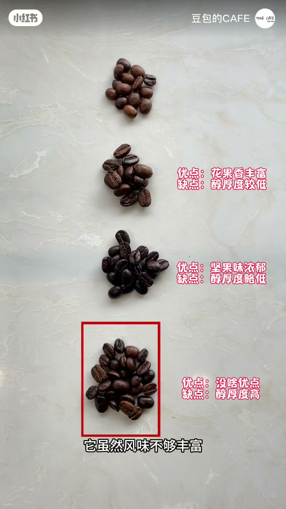
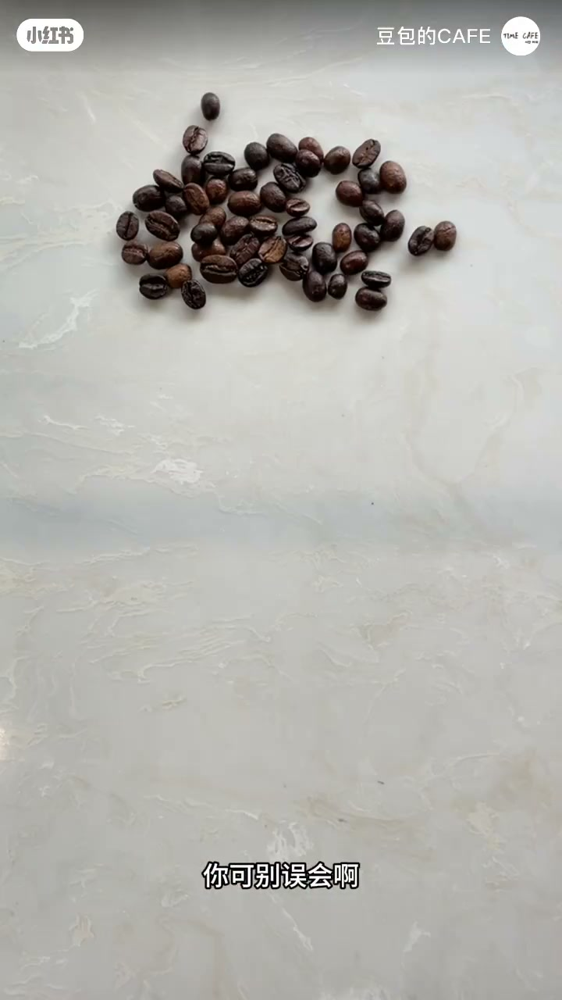
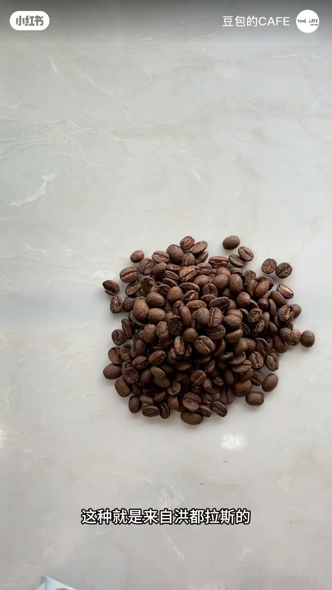

内容要点
作者先亮出一款颜色、外形不一致的拼配豆，再拆成多个阿拉比卡分支品种加一款罗布斯塔「拌在一起」的定义。接着用优缺点对照解释为什么拼：花果香好但醇厚度不够、坚果香好仍缺醇厚度，中庸罗布斯塔补醇厚度，四者刚合适。随后紧急纠偏——举例而已，不是所有拼配都要加罗布斯塔，也有三种阿拉比卡拼配；拼配无非为了丰富层次或表现更多风味。最后用洪都拉斯单品豆定义「自己一个品种、没加别的」，并以玩笑收尾。
知识结构
外观不一的豆子混在一起；多支阿拉比卡 + 罗布斯塔示例。
香气好缺醇厚度 → 用罗布斯塔补醇厚度，四豆平衡。
非必须加罗布斯塔；也可纯阿拉比卡拼；目的=层次/风味。
洪都拉斯单品=单一品种；玩笑「好东西谁舍得加别的」。
拼配=多豆互补（常见目标：风味层次 + 醇厚度）；单品=单一品种不混。罗布斯塔是可选工具不是拼配必选项；「好单品不乱拼」是价值判断，不是科学禁令。
00:00-00:21什么是拼配：外观不一拌在一起
开场提问：拼配豆和单品豆都是啥意思、又为啥拼配。镜头给出一款拼配豆——颜色不一样、长得也不一样，用肉眼差异先建立「混合」直觉。
打比方依次指认：阿拉比卡分支品种一、二、三，再加一种罗布斯塔，把它们拌在一起，就成了一款拼配豆。

00:21-00:49为什么拼：香气与醇厚度互补
好好的豆为啥拼？两款花香果香很好但醇厚度不够；另一款坚果味浓郁、咖啡香气好，仍缺一点醇厚度。
一款比较中庸的罗布斯塔登场：风味不够丰富，但带来的醇厚度正好均衡上面三个豆的缺点。四个拌在一起——风味有了、醇厚度有了；单拿一个都会觉得缺点什么，拼在一起刚刚好。


00:49-01:15纠偏与单品：不是必须加罗豆
紧急澄清：只是举例，可不是所有拼配豆都要加罗布斯塔；也有三种阿拉比卡拼在一起的豆子。拼配无非两种原因：一是丰富层次，二是表现更好、更多的风味。
镜头给出洪都拉斯单品豆：自己一个品种、没加别的，这就叫单品豆。收尾玩笑「好东西谁舍得加别的乱七八糟」——价值暗示大于技术定义，并自嘲别骂我。


完整转录（45段）
以下文本由 Whisper medium 模型自动转录，可能存在少量识别误差，已尽可能修正明显 ASR 错字。
今天咱们说说拼配豆和单品豆都是啥意思又为啥拼配
这是一款拼配豆
你有没有发现它颜色不一样长得也不一样
打个比方
这是阿拉比卡咖啡豆的一个分支品种
这是另一种阿拉比卡咖啡豆的分支品种
这又是另一种阿拉比卡的分支品种
这是一种罗布斯塔咖啡豆
把它们拌在一起
这就成了一款拼配豆
好好的豆为啥拼在一起
比如这两款豆花香果香风味很好
但醇厚度不够
这款豆坚果味浓郁
有很好的咖啡香气
但还是缺少一点醇厚度
一款比较中庸的罗布斯塔来了
它虽然风味不够丰富
但它酷啊
它带来的醇厚度正好均衡了上面三个豆的缺点
把它们四个拌在一起
风味有了
醇厚度有了
如果单拿出来一个
可能你都会觉得缺点什么
拼在一起呢就刚刚好了
你可别误会啊
我就是举例说明而已
可不是所有拼配豆都要加罗布斯塔
像这款豆子是三种阿拉比卡拼在一起的
拼配无非就是两种原因
一是丰富层次
二是表现更好
更多的风味
这种就是来自洪都拉斯的单品豆
就是它自己一个品种
没加别的
这就叫单品豆了
说白了
好东西
谁舍得加别的
乱七八糟啊
明白了吧
我可啥也没说
别骂我